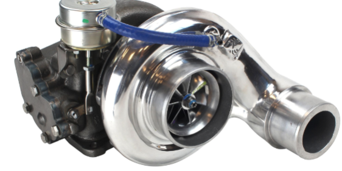
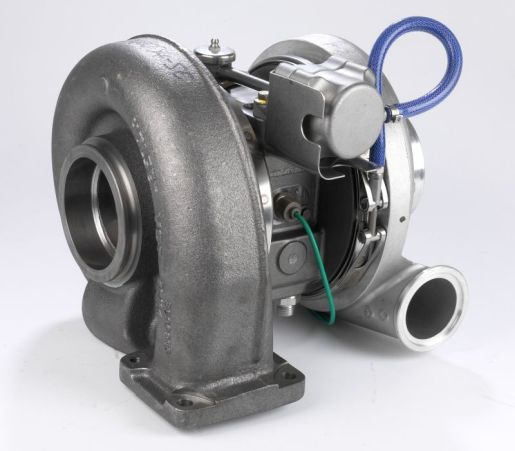
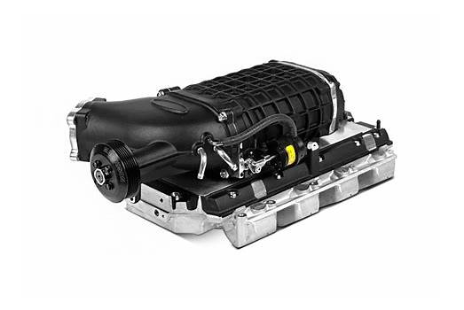

Sistemas de inducción
La inducción de tu coche te da dolores de Cabeza? El turbolag es insoportable? El turbo es decorativo?
Prepárate para volverte un hombre de verdad y adquiere uno de estos sistemas de inducción forzada
RECUERDA; NUESTROS SISTEMAS DE INDUCCIÓN VIENEN ACOMPAÑADOS DE INDICADORES ANALÓGICOS DE PRESIÓN PARA REGULAR LAS ETAPAS DE CARGADO Y VACÍO
ECHA UN VISTAZO A NUESTROS PRODUCTOS



TURBOPOWER SUPRA STUTU
Este potente turbo, diseñado para Toyota supra, alcanza una presión de
2,50 bares, un turbo en condiciones, como debe ser, para que tu coche
suene como una auténtica aspiradora, además, en estos momentos lo tenemos
en una rebaja del 17%
325,99€
1/2 PART 2JZ GT86
Este turbo viene con sorpresa, una sopresa dedicada a los JDM fans y es
que al venir sin válvula de alivio, hace el famoso ruído que todos los canis
aman. El turbo te durará menos de dos meses sin que gripe, pero ya verás
lo bien que suena.
230€
AMERICAN HELLCAT SUPERCHARGER
There´s literally nothing to say about this one, this is America dude! If you
want to be a real man, you need a huge beer, a huge shotgun, a huge woman´s a**
and a SUPERCHARGER
450,90$